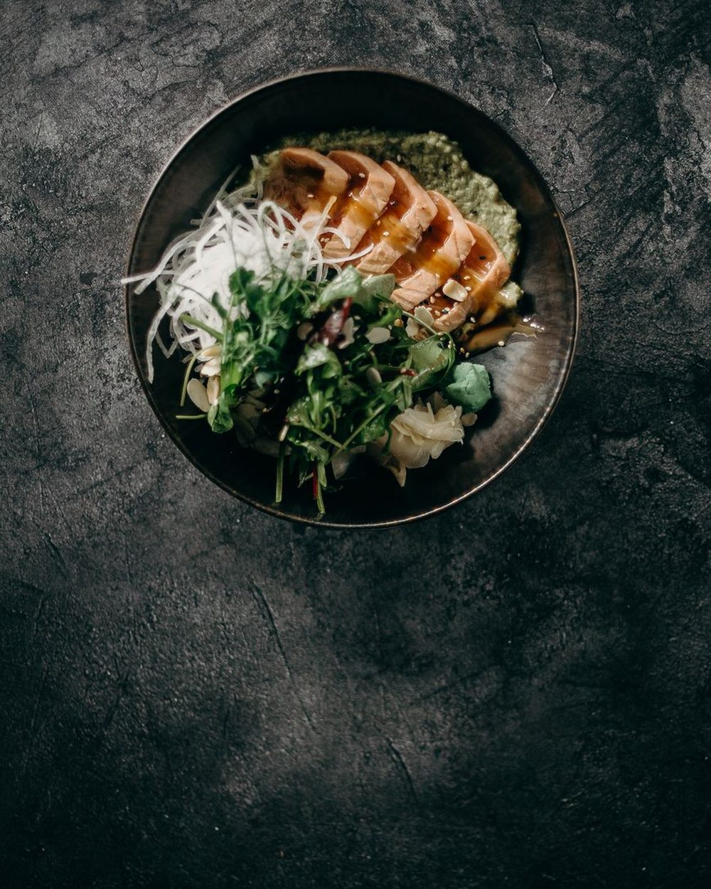
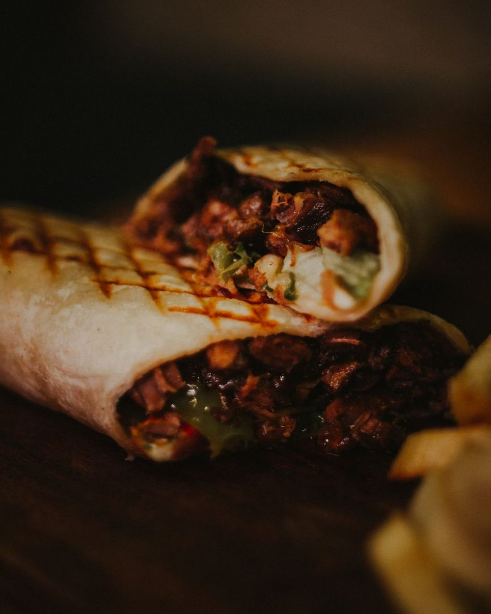
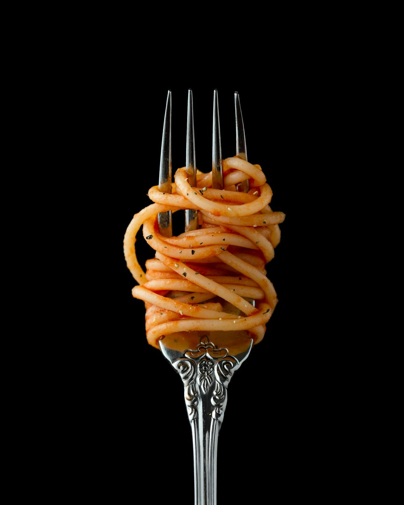

Petit-déjeuner 485 kcal
Pain perdu
2 tranches de pain complet (70 g) · 1 œuf · 100 ml de lait demi-écrémé · 1 banane (120 g) · 15 g de beurre de cacahuète
P 22G 62L 16
Nutrition de précision
Un programme fait à la main, pesé au gramme près, et pensé pour toi.
Composé par Damien & Yoann, tes coachs.
Pain perdu
2 tranches de pain complet (70 g) · 1 œuf · 100 ml de lait demi-écrémé · 1 banane (120 g) · 15 g de beurre de cacahuète
Wrap mexicain
1 wrap de blé (58 g) · 110 g de filet de poulet · 35 g de riz · 100 g de haricots rouges · 80 g de maïs
Sandwich salé
3 tranches de pain complet (105 g) · 2 tranches de blanc de poulet · salade verte à volonté · 3 tranches de cheddar (60 g)
Bolognaise
170 g de viande hachée 5 % · 140 g de pâtes · 250 g de pulpe de tomate · 1 oignon · 20 g de parmesan
Idées reçues
Touche une croyance pour la retourner. Ce qu'on t'a répété n'est pas toujours vrai.
FauxC'est le total de ta journée qui compte, pas l'heure de l'assiette. Du riz le soir ne t'a jamais fait grossir.
FauxOn ne tient pas une diète qu'on déteste. De vrais repas, en quantité, que tu as envie de manger. C'est ce qui dure.
FauxLa gourmandise a sa place : dosée, jamais supprimée. Un carré de chocolat ne ruine pas des semaines de travail.
VraiEn prise de masse, on vise de gros volumes, et c'est justement le plus dur à tenir sans un plan calibré.
FauxAucun corps n'a les mêmes besoins. Tes quantités sont calculées pour toi, pas pour une moyenne.
Ce n'est pas un régime
Un programme Elysium, c'est de vrais repas, en quantité, pour que tu manges à ta faim sans te priver.
Voir leurs transformations« Je ne pensais pas qu'on allait autant manger. »
Dans l'assiette
Pas des barres ni des shakers. De vrais repas, en quantité, calibrés au gramme, pensés pour une vie réelle.

Riz, saumon, avocat, légumes croquants. Frais, coloré, jamais fade.

Protéine, féculent et légumes dans la tortilla. Rassasiant, carré.

Les glucides sont dosés, pas supprimés. Le confort reste au menu.
On ne se prive pas au réveil. La gourmandise est calibrée, pas sautée.
Visuels d'illustration. Chaque programme est composé selon ton questionnaire.
La méthode
Quatre étapes, toutes tournées vers toi. On pose tes chiffres, on construit tes plats, on ajuste au gramme, et on te livre.
Ton questionnaire : objectif, rythme de vie, goûts, contraintes.
Tes besoins posés en chiffres : calories, protéines, glucides, lipides.
Tes plats, composés un par un et ajustés au gramme.
Ton programme dans ton espace, et en PDF à imprimer.
Un accompagnement, pas un menu
Pour de vrais résultats, on recommande au minimum 12 semaines. Tes quantités sont réajustées d'après l'évolution de ton poids : c'est ta pesée, notée dans ton espace, qui fait évoluer ta diète. Sans elle, rien ne bouge.
Tu changes d'objectif quand tu veux. Nous, on s'occupe de la réflexion ; toi, tu fais tes courses, tu cuisines et tu profites.
Les formulesOn commence ?
Fait à la main, pesé au gramme, pour toi et personne d'autre.
Une question ? Par mail, elysium.np.pro@gmail.com, ou sur Instagram, @elysium.nutrition.performance